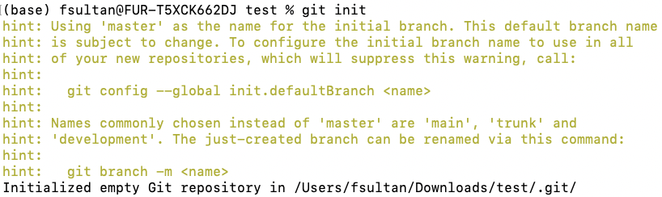
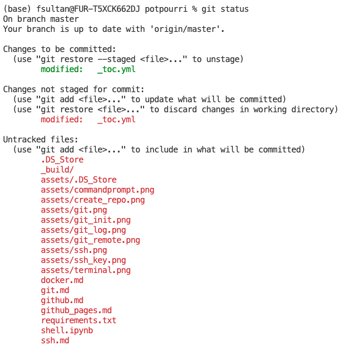
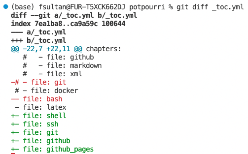

Git#
Git is a distributed Version Control System (VCS). Version control systems are tools used to track changes to source code (or other collections of files and folders). As the name implies, these tools help maintain a history of changes; furthermore, they facilitate collaboration.
“I’m not a nice person and I don’t care about you”

Git was developed by Linus Torvalds, who also created the open source operating system Linux (portmanteau of Linus and Unix).
Torvalds is known for his technical brilliance but also his very abrasive personality. This interview on TED of Torvalds is a good introduction to him.
VCSs track changes to a folder and its contents in a series of snapshots, where each snapshot encapsulates the entire state of files/folders within a top-level directory. VCSs also maintain metadata like who created each snapshot, messages associated with each snapshot, and so on.

Individual snapshots can be compared to each other, and differences can be extracted. For example, you can ask questions like what changed between this snapshot and the previous snapshot? Who made those changes? etc.
While other VCSs exist, Git is the de facto standard for version control. This XKCD comic captures Git’s reputation:
Because Git’s interface is a leaky abstraction, learning Git top-down (starting with its interface / command-line interface) can lead to a lot of confusion. It’s possible to memorize a handful of commands and think of them as magic incantations, and follow the approach in the comic above whenever anything goes wrong.
Initial Setup#
Note
If this is the first time you’ve installed Git, you may need to configure it. You only need to do this once per machine.
You can configure your Git username and email using the following commands, replacing John Doe’s info with your own.
$ git config --global user.name "John Doe"
$ git config --global user.email johndoe@example.com
These details will be associated with any commits that you make and blame will be correctly assigned.
Starting from scratch#
Fire it up: git init#
Git init is a one-time command you use during the initial setup of a new repo. Executing this command will create a new Git repository in the current directory. This will create a new subdirectory named .git that contains all of your necessary repository files — a Git repository skeleton. At this point, nothing in your project is tracked yet. (See the next section to learn how to start tracking files.)
{kind=link}
Link it to your Github repository: git remote add origin#
Git remote is a command to manage the set of remotes associated with a repository. A remote in Git is a common repository that all team members use to exchange their changes. In most cases, such a remote repository is stored on a code hosting service like GitHub or on an internal server. In contrast to a local repository, a remote typically does not provide a file tree of the project’s current state. Instead, it only consists of the .git versioning data.
$ git remote add origin <remote repository URL>
$ git remote -v
The remote repository URL is the URL of the repository on GitHub. The git remote -v command lists the URLs that Git has stored for the shortname to be used when reading and writing to that remote.
On Github, you can find the URL of your repository by clicking on the green button that says “Code” and copying the URL that appears under SSH tab.
Starting from an existing repo on Github#
Git clone is a command for downloading existing source code from a remote repository (like Github, for example). Cloning a repository downloads an exact copy of all the repository data that GitHub has at that point in time, including all versions of every file and folder for the project. You can push your changes to the remote repository on GitHub, or pull other people’s changes from GitHub.
The syntax for git clone is as follows:
$ git clone <repo URL>
You can find the URL of your repository by clicking on the green button that says “Code” and copying the URL that appears under SSH tab.
You don’t need to run git init or git remote add origin if you are cloning an existing repository.
Normal day at work (by yourself)#
When you are not collaborating with others, using git is pretty straightforward.
In git, there are four main states that your files can reside in. They are:
untracked: means that Git sees the file as a new file that has not been committed to the database yet.
staged: means that you have marked a modified file in its current version to go into your next commit snapshot.
committed: means that the data is safely stored in your local database.
pushed: means that your data has been transferred to a remote repository.
1. git status#
Git status is a command that displays the state of the working directory and the staging area. It lets you see which changes have been staged, which haven’t, and which files aren’t being tracked by Git. Status output does not show you any information regarding the committed project history. For this, you need to use git log.
{kind=link}
* git diff (optional)#
Git diff is a multi-use Git command that when executed runs a diff function on Git data sources. These data sources can be commits, branches, files and more. The git diff command is often used along with git status and git log to analyze the current state of a Git repo.
2. git add#
Git add is a command used to add files to the staging area. It tells Git that you want to include updates to a particular file in the next commit. However, git add doesn’t really affect the repository in any significant way—changes are not actually recorded until you run git commit.
git add <file-name-1>
git add <file-name-2>
git add <file-name-3>
:
git add <file-name-n>
3. git commit#
Git commit is a command used to save the changes to the local repository. Note that git commit alone doesn’t send changes to the remote repository. It only records changes to the local repository. To send those changes to the remote repository, you need to execute git push.
git commit -m <Short text msg to communicate what are the changes made in the snapshot being committed>
5. git push#
Git push is a command used to upload local repository content (stuff that has been commit-ted) to a remote repository. The syntax for git push is as follows: git push -u <name of remote branch> <name of local branch>. In most situtations, you will be pushing to the main branch of the origin remote repository. In that case, the command will be
git push -u origin main
Normal day at work (in a team)#
For future lecture.
Umm.. IDK what happened…#
Tip
This webpage, with an easy to remember name, is a great resource for such situations!
While working on a project, you may find yourself in a situation where you need to undo a commit. Git offers two main ways to undo changes to commits: git revert and git reset.
git log#
The first thing you should do is when you inevitably mess up is to assess the situation and identify the most recent commit up to which everything was working fine.
Git log is a command used to display the commit history of a repository. By default, git log displays the commit hash, the author and the commit message. The git log command allows you to customize the output using a large number of flags and options.
It is often a good idea to use git log --oneline to get a more concise view of the commit history.
Git reset is a powerful command that is used to undo local changes to the state of a Git repo. Git reset operates on “The Three Trees of Git”. These trees are the Commit History ( HEAD ), the Staging Index, and the Working Directory.
git revert#
revert is the command we use when we want to take a previous commit and add it as a new commit, keeping the log intact.
Step 1: Find the previous commit:

1.1. First thing, we need to find the point we want to return to. To do that, we need to go through the log.
To avoid the very long log list, we are going to use the --oneline option, which gives just one line per commit showing i) the first seven characters of the commit hash and ii) the commit message
Step 2: Use it to make a new commit:

git revert HEAD --no-edit
To revert to earlier commits, use git revert HEAD~x (x being a number. 1 going back one more, 2 going back two more, etc.)
git reset#
reset is the command we use when we want to go back to a previous commit and erase everything that happened after it.


Similar to revert, we first need to find the commit we want to go back to using git log.
Next, we need to use the reset command.
To reset to earlier commits, use git reset followed by the first seven characters of the commit hash of the commit you want to go back to.
git reset 1a2b3c4d